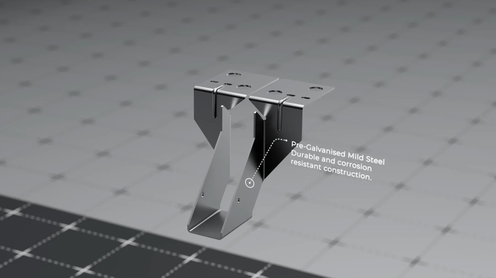

Học phí khoá học Blender: tính sao cho đúng

Học phí khoá học Blender ở Việt Nam chênh nhau tới vài lần cho những lớp nghe mô tả gần giống nhau, nên so tổng tiền là cách so sai. Con số đáng nhìn là đơn giá mỗi lần bài của bạn được chữa riêng, cộng với số món hoàn chỉnh bạn mang ra khỏi khoá. Tính theo hai chỉ số đó, một lớp đắt gấp đôi thường lại rẻ hơn.
Bài này không nêu học phí của bất kỳ đơn vị nào, kể cả của chúng tôi, vì giá thay đổi theo thời điểm và theo việc lớp có chữa bài hay không. Thứ bài viết cung cấp là một cách tính bạn có thể áp lên mọi báo giá bạn nhận được, kèm bốn khoản chi phí hầu như không ai nhắc trước khi bạn chuyển khoản.
Vì sao học phí khoá học Blender chênh nhau quá xa
Blender miễn phí, nên toàn bộ tiền bạn trả là tiền mua thời gian của người dạy và cơ chế phản hồi. Ba mô hình dưới đây có cấu trúc chi phí hoàn toàn khác nhau, và đó là nguồn gốc của mọi khoảng cách giá.
Lớp phát video, hỏi đáp chung
Chi phí biên gần như bằng không, thêm một học viên không làm người dạy mất thêm giờ nào. Giá rẻ là hợp lý. Đổi lại, không ai xem cụ thể file của bạn.
Lớp đông có chữa bài theo nhóm
Người dạy phải mở bài thật, nhưng nhận xét được phát cho cả lớp. Giá trung bình. Phần bạn nhận được phụ thuộc vào việc bài của bạn có được chọn làm ví dụ hay không.
Kèm riêng hoặc lớp rất nhỏ
Mỗi giờ của người dạy chỉ phục vụ một hoặc vài người, nên giá cao nhất và đó là mức giá đúng. Mô hình này giải quyết được chỗ kẹt riêng của bạn, thứ mà video không bao giờ chạm tới. Phần so sánh chi tiết nằm trong bài tự học Blender hay học kèm.
Bạn không mua bài giảng. Bài giảng về Blender trên mạng đã đủ nhiều và phần lớn là miễn phí. Bạn mua việc có người nhìn vào file của bạn và nói đúng chỗ sai.
Cách quy mọi báo giá về một con số so được
Khi nhận báo giá, đừng ghi lại tổng tiền. Ghi lại bốn thứ: tổng học phí, số lần bài của chính bạn được chữa riêng trong cả khoá, số bài bắt buộc phải nộp, và số món hoàn chỉnh dự kiến có sau khoá. Rồi lấy tổng học phí chia cho số lần được chữa bài.
Con số đó là đơn giá phản hồi. Nó cho thấy vì sao hai lớp cùng giá có thể khác nhau hoàn toàn: một lớp mười hai tuần chữa bài hằng tuần cho đơn giá bằng một phần sáu so với một lớp cùng giá chỉ chữa bài hai lần ở giữa và cuối khoá.
Chỉ số thứ hai: số món hoàn chỉnh
Thứ xin việc được là portfolio, không phải chứng chỉ. Một khoá cho ra ba món hoàn chỉnh đủ đăng, kể cả khi đắt hơn, vẫn đáng hơn một khoá cho ra mười hai bài tập dở dang. Hỏi thẳng câu này trước khi đóng tiền, và đòi xem ví dụ thật. Trang bài tập học viên của chúng tôi là dạng bằng chứng bạn nên yêu cầu ở bất cứ nơi nào bạn định học.
Bảng so sánh ba mô hình theo chi phí thật
| Tiêu chí | Khoá video, hỏi đáp chung | Lớp đông có chữa bài nhóm | Kèm riêng hoặc lớp rất nhỏ |
|---|---|---|---|
| Mức học phí tương đối | Thấp nhất | Trung bình | Cao nhất |
| Bài của bạn được xem riêng | Không, hoặc rất hạn chế | Có, nhưng nhận xét chung cho lớp | Có, từng bài |
| Đơn giá mỗi lần được chữa bài | Rất cao vì số lần gần bằng không | Trung bình | Thường thấp nhất tính theo giá trị |
| Rủi ro bỏ giữa đường | Cao nhất, không ai nhắc bạn nộp bài | Trung bình | Thấp nhất |
| Phù hợp khi | Bạn đã có nền và chỉ cần tài liệu | Bạn mới bắt đầu, cần nhịp và bạn học | Bạn đang kẹt ở một khâu cụ thể |
| Thứ thường thiếu | Chẩn đoán chỗ sai của riêng bạn | Thời lượng dành riêng cho bạn | Môi trường có người cùng học |
Bảng này không nói mô hình nào tốt nhất. Nó nói rằng mức giá phản ánh thứ bạn nhận được, và sai lầm phổ biến nhất là trả tiền cho mô hình rẻ khi vấn đề của bạn chỉ mô hình đắt mới giải được. Nếu bạn còn chưa rõ mình đang thiếu gì, hai bài khoá học Blender 3D cho người mới và khoá học modeling 3D mô tả cụ thể phần nền và thứ tự học tối thiểu.

Bốn khoản nằm ngoài hoá đơn
Đây là phần làm vỡ ngân sách của nhiều người, vì không nơi nào ghi vào báo giá.
Máy tính. Khoản lớn nhất và dễ bị bỏ sót nhất. Nếu máy hiện tại không kham được khâu kết xuất, bạn sẽ phải nâng cấp giữa khoá, đúng lúc đang tốn học phí. Kiểm tra trước bằng bài cấu hình máy học Blender, trong đó có phần nói rõ mức nào đủ và mức nào chỉ là mong muốn.
Thời gian của bạn. Số giờ làm bài ở nhà luôn lớn hơn số giờ trên lớp. Ước lượng từ các nhóm đã đi qua là khoảng sáu tới mười giờ mỗi tuần để theo kịp một chương trình có nộp bài. Quy số giờ đó ra giá trị giờ của bạn rồi cộng vào, bạn sẽ thấy học phí thường là phần nhỏ trong tổng đầu tư.
Lưu trữ và sao lưu. File 3D phình nhanh. Một dự án sản phẩm có texture độ phân giải cao dễ chiếm vài chục gigabyte. Mất file giữa khoá là mất cả tiền và tinh thần.
Chi phí đi lại, nếu học trực tiếp. Ở TPHCM, hai buổi mỗi tuần vào giờ tan tầm là khoảng năm mươi tới sáu mươi giờ ngồi xe cho một khoá bốn tháng. Phần tính chi tiết nằm trong bài khoá học 3D tại TPHCM.
Danh sách kiểm tra trước khi chuyển khoản
Mười câu, dùng được cho mọi mức giá. Nơi dạy tử tế trả lời thẳng cả những câu bất lợi cho họ.
- Tổng học phí gồm những gì, có khoản nào phát sinh sau không?
- Trong cả khoá, bài của riêng tôi được chữa bao nhiêu lần?
- Chữa bài là nhận xét riêng cho file của tôi, hay nhận xét chung trước lớp?
- Kết thúc khoá tôi có bao nhiêu món hoàn chỉnh đủ đưa vào portfolio?
- Người chữa bài có đang làm dự án thật không, xem dự án đó ở đâu?
- Lớp có bao nhiêu người, và tỉ lệ một người dạy trên bao nhiêu học viên?
- Nghỉ một buổi thì học bù thế nào, có bản ghi hay không?
- Khoá dạy tới đâu: dừng ở dựng hình, hay có cả vật liệu, ánh sáng và kết xuất?
- Yêu cầu cấu hình máy tối thiểu là gì?
- Có chính sách hoàn tiền hoặc đổi lớp nếu tôi thấy không phù hợp sau vài buổi đầu không?
Câu thứ tư và câu thứ năm là hai câu lọc mạnh nhất. Một nơi dạy có kết quả thật thì luôn sẵn ví dụ để đưa bạn xem, cả bài tốt lẫn bài còn yếu kèm phần nhận xét.
Khi nào chưa nên đóng học phí cho bất kỳ khoá nào
Nói thẳng, có những trường hợp đóng tiền lúc này là lãng phí.
Nếu bạn chưa mở Blender lần nào và chưa chắc mình thật sự thích công việc này, hãy tải cẩm nang Blender miễn phí và làm hết phần bài tập trong đó trước. Mất một đến hai tuần, không tốn đồng nào, và nó loại bỏ phần lớn rủi ro chọn sai khoá.
Nếu bạn đã dựng được vài món nhưng không biết chúng yếu ở đâu, vấn đề của bạn là chẩn đoán, không phải bài giảng. Một khoá đại trà sẽ dạy lại thứ bạn đã biết. Hình thức học kèm 1 kèm 1 Blender hợp hơn, và tính theo đơn giá phản hồi thì thường còn rẻ hơn.
Nếu tuần nào bạn cũng chỉ còn dưới ba giờ rảnh, hãy để dành tiền. Không có mức học phí nào bù được việc không ngồi vào bàn. Đợi tới giai đoạn đời sống cho phép sáu tới mười giờ mỗi tuần rồi hãy đăng ký.
Học phí khoá học Blender nên được nhìn như một khoản đầu tư có kỳ hạn
Cách lành mạnh nhất để quyết định là đặt câu hỏi ngược: sau sáu tháng, thứ gì chứng minh khoản tiền này đáng. Nếu câu trả lời là một tấm chứng chỉ, bạn đang trả tiền cho thứ thị trường không chấm. Nếu câu trả lời là ba món trong portfolio, một quy trình làm việc lặp lại được và khả năng tự chẩn đoán lỗi, thì mức học phí cao hơn hoàn toàn chính đáng.
Mức lương và nhu cầu tuyển của mảng này ở Việt Nam được mô tả theo khoảng trong trang nghề 3D artist, kèm phần nói rõ đó là ước lượng chứ không phải số liệu chính thức. Đọc trang đó cùng với bài này sẽ cho bạn một bài toán hoàn chỉnh hơn, thay vì chỉ nhìn con số học phí trần trụi.
Hỏi đáp
Học phí khoá học Blender khoảng bao nhiêu là hợp lý?
Không có mức chung, vì một khoá phát video và một khoá chữa bài hằng tuần là hai sản phẩm khác nhau. Thay vì tìm mức hợp lý, hãy lấy tổng học phí chia cho số lần bài của bạn được chữa riêng, rồi so các báo giá bằng con số đó.
Blender miễn phí thì sao vẫn phải trả học phí?
Vì bạn trả cho thời gian của người chữa bài và cho cơ chế buộc bạn nộp bài đều, không trả cho phần mềm. Nếu bạn đã có khả năng tự kỷ luật và tự chẩn đoán lỗi, tài liệu miễn phí hoàn toàn đủ.
Khoá đắt có chắc tốt hơn khoá rẻ không?
Không chắc. Giá cao chỉ hợp lý khi nó mua được thời lượng dành riêng cho bạn. Một khoá đắt mà vẫn bốn mươi người một lớp và nhận xét chung thì chỉ là khoá rẻ bán giá cao.
Có nên trả góp hoặc đóng theo từng phần?
Nếu nơi dạy cho đóng theo chặng, đó thường là dấu hiệu tốt vì họ chịu rủi ro cùng bạn. Hỏi rõ điều kiện dừng giữa khoá trước khi ký, và đọc kỹ phần hoàn tiền.
Học xong khoá là làm được việc ngay chứ?
Thường là không ngay. Khoảng thời gian thực tế tới mức nhận được việc, cùng các mốc cụ thể, nằm trong bài học Blender 3D bao lâu. Bất cứ nơi nào cam kết có việc ngay sau khoá đều nên bị hỏi lại rất kỹ.
Nếu bạn đang cầm hai ba báo giá và không biết chọn cái nào, cứ gửi cho chúng tôi mô tả từng lớp: số buổi, số người, số lần chữa bài và số bài nộp. Chúng tôi sẽ nói thẳng cái nào có đơn giá phản hồi tốt hơn, kể cả khi câu trả lời là không nên học ở đâu cả mà cứ tải cẩm nang làm trước một tháng. Muốn xem cách một chương trình chia bài theo tuần trông thế nào, hai hệ ở trang khoá học 3D Blender ghi rõ bài nộp và cách chữa bài từng tuần.
Đọc tiếp


Muốn được sửa bài trực tiếp?
Coaching 1:1 online, đồng hành trọn một năm. Để lại thông tin, tôi xem qua và tư vấn bạn nên bắt đầu từ đâu.
Đăng ký tư vấn